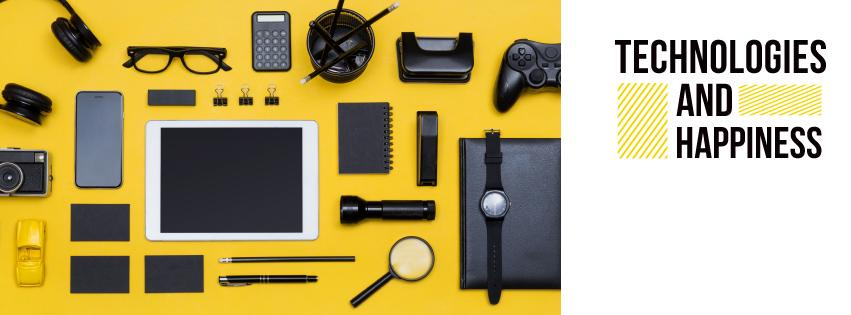

Гаджеты
Что такое гаджет? Гаджет (англ. gadget — приспособление, прибор) — это специализированное устройство или приложение небольшого размера, которое подключается к более большим и сложным устройствам через стандартизированный интерфейс (разъем, порт) и не может работать в автономном режиме. Гаджеты всегда относятся к нововведениям и во время своего изобретения считаются на шаг впереди стандартных технологических устройств.
Синонимом слова гаджет можно считать народное слово «примочка» — то есть примочку для электрогитары, в принципе, тоже можно назвать гаджетом. То есть гаджет может быть и самодельным устройством, разработанным продвинутым народным умельцем на все руки.
Самое главное предназначение любого гаджета – расширение функционала устройства, к которому он подключается. Примером гаджетов для наших с вами излюбленных девайсов (о том, что такое девайс, читайте в отдельной статье) могут служить внешние GPS-приемники на смартфонах и коммуникаторах..

- Роботы
- Космос
Гаджеты бывают и в программном обеспечении (еще их там называют виджеты). Это маленькие приложения, облегчающие пользователю жизнь и предоставляющие всякую полезную информацию, как например курс валют или прогноз погоды. Для примера можем назвать мини-приложения Google Gadgets, виджеты Opera, мини-приложения для боковых панелей Windows Vista и Windows 7 и другие. Пример гаджета погоды для рабочего стола Windows 7 можно увидеть выше.
Несмотря на то, что для удобства мы сейчас называем гаджетами почти все продвинутые технологические устройства, такие как флэшка, планшет, смартфон, MP3-плеер, нетбук и многие другие, это не совсем верно. Ведь все эти устройства могут работать автономно, не подключаясь ни к какому другому устройству, и следовательно не совсем подпадают под истинное определение гаджета.